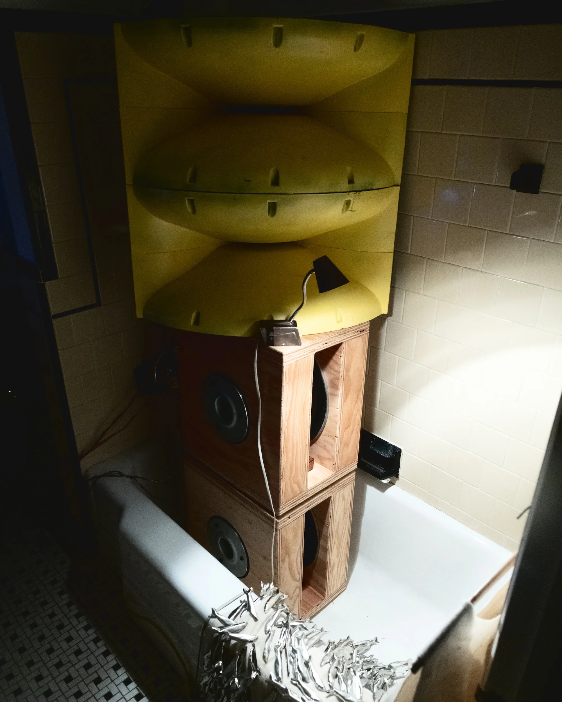
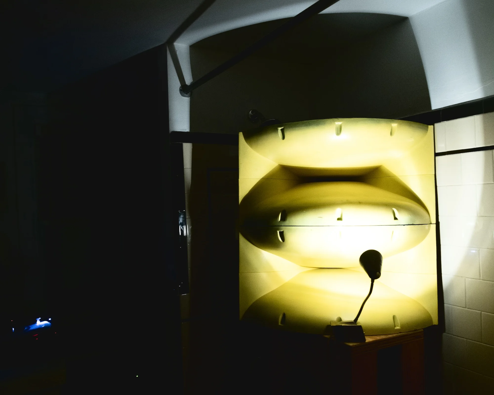
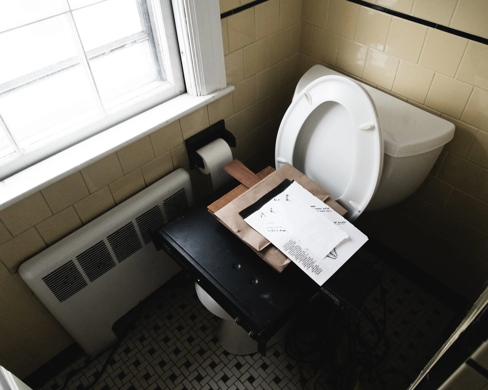
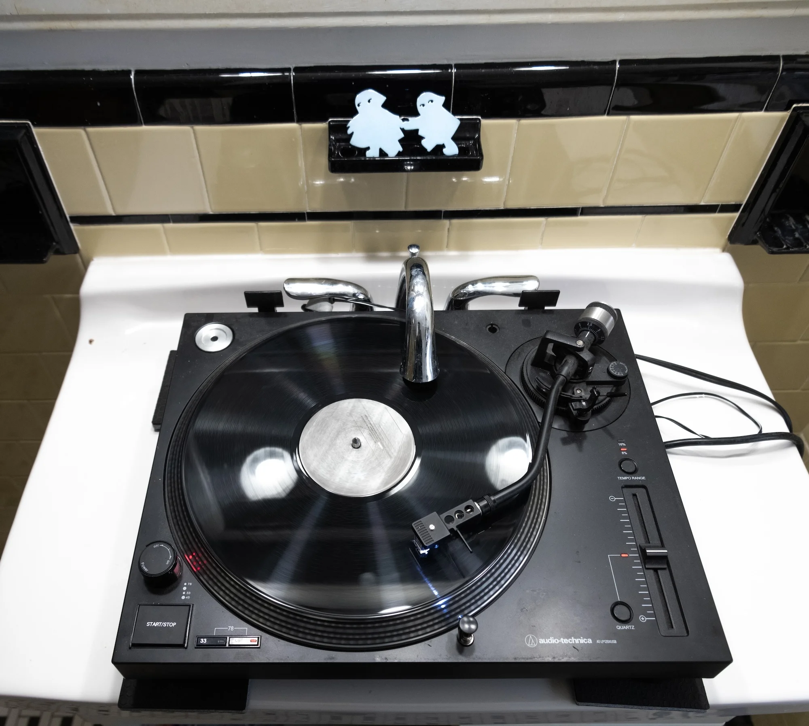

Medium: Sculpture, Installation
Year: 2026
Duration: 02:00:00
Channels: 2
Exhibition: Aquaponic Reverberations
Location: Tiffany Street Studios, Providence RI
Performance Components: Vinyl Selection




Investigation of the acoustic properties of ripole subwoofers and biradial tweeter horns in a bathtub. Dub Techno for low frequency content and cultural significance.